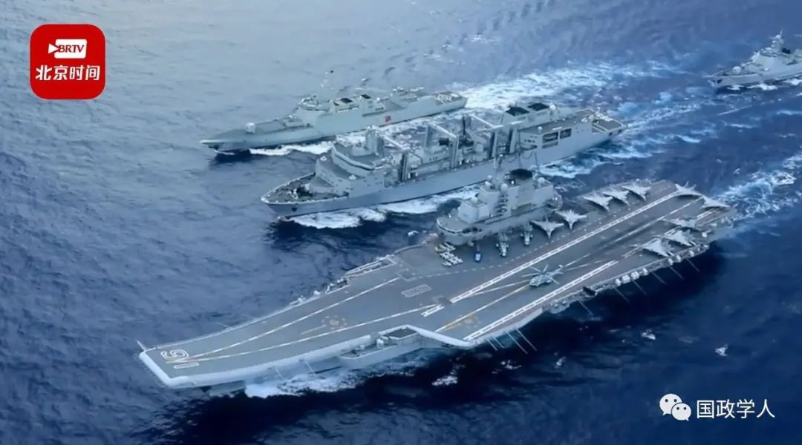

收录于合集

地位信号、多重观众与中国外交再定位
**
**
2022年4月23日是中国人民海军成立73周年，22日海军向全社会公开发布首部航母主题宣传片，宣传片在结束之时暗含“彩蛋”。军事专家认为，第三艘航母研发采用很多新技术，相信应该在2022年下半年可以下水。与前两艘航母大同，这艘运用了电磁弹射技术，在中国航母建造进程中具有里程碑意义。值此第三艘航母即将下水之际，我们应该如何理解中国航母建造背后政治与战略动机？美国内华达大学政治学系副教授蒲晓宇借鉴地位信号释放的有关概念，搭建了一个国际政治地位信号的分析框架，用以对中国的国家形象管理和自我再定位做出分析。本文来源于《外交评论》2014年第2期，原题目为《地位信号、多重观众与中国外交再定位》，文章内容不代表国政学人平台观点。

01
中国外交再定位：一个争论中的议题
随着近年来中国国际地位的上升，中国外交似乎给国际社会留下了一个趋于强势的印象。但同时，国际舆论又普遍认为中国在某些重大事件中继续保持外交低姿态，强调自身作为发展中国家的地位，继续坚持不干涉别国内政等原则。国内也有舆论强调中国在相当长时期内应该保持全球性经济大国的地位，避免做政治大国和军事大国。 在新的历史基点上，中国应该如何定位自己的外交目标和战略，这已成为中国外交面临的一个重要的理论和实践问题。
外交定位是一个非常复杂的问题，涉及国内、国际政治的方方面面，包括地缘政治、国际责任、政治意识形态属性等。 本文将中国的外交定位问题与国际关系理论结合起来，集中关注一个层面，即新兴大国地位和发展中国家地位在中国外交定位中的影响。本文将运用地位信号的理论来解释相关问题。 作为一种非传统的信号释放类型，地位信号释放在国际关系研究中尚未得到深入的考察。在国际关系领域， 地位信号释放（Status Signaling）是指政府或领导人运用一些行为或言辞，传递一个国家希望获得或已经获得的特定国际地位的若干信息。换言之，地位信号释放旨在改变或者维持国内观众和国际观众对相关国家的国际地位所持有的看法。
在20世纪90年代，一位英国战略分析家曾提出一个今天看起来很奇怪的问题：“中国重要吗？”在他看来，“中国顶多是个精通剧场外交艺术的二流中等国家，却使我们心甘情愿地相信它的实力。”在一些国际学者看来， 20世纪90年代的中国似乎对自身的大国地位有所夸大，以此赢得谈判优势。 换言之，当时的中国可被视为“声望最大化者”（prestige maximizer）。 21世纪的中国却似乎经常对自身的实力地位轻描淡写，有时甚至突出自身的薄弱之处。 中国将会塑造国际体系的未来走向，因为国际秩序的内涵，很大程度上取决于新兴国家——尤其是中国——致力于居中扮演什么样的角色，例如新兴国家可以选择成为旧体系的支持者、破坏者抑或规避者。
根据有关新兴国家研究的既有文献，一个崛起的大国应当会不断地提升其声望和地位。 如果一个崛起的中国确实寻求更高的地位，为什么中国有时要凸显其薄弱之处？ 今天的中国释放出了两种看似矛盾的信号：一方面， 通过各种引人注目的项目，中国释放出了作为一个新兴崛起大国具有的较高地位信号；另一方面，中国却又释放出了作为一个脆弱的发展中国家的地位信号。 从现有的国际关系理论来看，中国的有关信号释放行为以及中国对自我国际形象的管理，有时显得不是那么连贯一致。
中国对于未来国际秩序变动以及自身在其中的角色定位，并没有一个清晰连贯的构想。 在过去二十年中，中国外交官员和学者们激烈争辩着中国成为一个大国所面临的风险、机遇和责任。可以说中国是一个有着多重国际身份的新兴国家。中国的外交政策常常释放出各种不同又相互矛盾的信号。如果说中国在20世纪90年代显然是一个“地位最大化者”，现如今却对其新的国际地位措手不及，而它的快速崛起也比预期的更快。
中国尚未成功树立一种新的形象，也没能为自己的地位和角色建立稳定而明确的预期。换言之，世界虽呼唤一个“可预期的中国”，但中国似乎尚未能给外界一个清晰而可预期的形象。事实上， 就其在国际社会中的地位而言，当今中国释放出了形形色色、令人困惑的信号。
中国释放的混杂信号在自我定位的信号释放中尤为显著。为了展示大国地位，中国追逐各种引人注目的工程，如北京奥运会、上海世博会、太空计划以及航空母舰工程。中国借助这些引入注目的工程的确可以巩固大国地位，但为何一个崛起的中国却又时常释放另一类发展中国家地位的信号呢？ 现有国际关系理论研究预计到了一个崛起大国会有各种“地位最大化”（status-maximizing）行为，但一个新兴国家的“地位最小化”（status- minimizing）行为却有待考察。 中国不断提升大国地位符合国际政治理论的预期，因为权力转移理论认为，一个迅速崛起的大国将会提升其地位。但中国并不总是展示大国地位。在中国的信号释放行为中，我们可以发现一个明显的趋势，就是中国有时刻意强调自己的发展中国家地位。比如，中国拒绝在2008年全球金融危机中承担更重要的角色。八国集团（G-8）被普遍视为一个精英大国俱乐部，加入其中或许有利于巩固中国的大国地位。然而，中国外交界普遍认为中国不应该加入八国集团。两国集团（仅包括美国和中国的G-2）的构想或许能够提升中国的国际地位，但中国领导人公开驳斥这一提议。中国反复强调其作为一个“发展中国家”的地位。在中共十八大的报告中，胡锦涛就特别强调，“我国是世界最大发展中国家的国际地位没有变。”中国呈现给世界两副面孔——富强的新兴大国和贫穷的发展中国家。为什么中国领导人要强调中国的发展中国家地位呢？ 如何对中国呈现出的两副面孔——新兴大国和脆弱的发展中国家，做出一个简要而连贯的解释呢？
02
解释机制：地位信号、多重观众与多重动机
本文借鉴地位信号释放的有关概念，力图搭建一个国际政治地位信号的分析框架，用以对中国的国家形象管理和自我再定位做一些分析。
在经济学中，地位信号释放最初是从炫耀性消费和位置性商品的角度来讨论的。在凡勃伦看来，“有闲阶级”通过对奢侈品的消费来炫耀他们的社会地位。赫希则提出了与此相关的“位置性商品”的概念，这个概念是指限量供应的商品因其自身的稀缺可以给人们带来一种相对位置的满足感。施韦勒借用位置性商品的概念，也分析了国际政治领域大国地位竞争的基本趋势。
本文把这些概念借鉴到国际政治领域，搭建了一个地位信号的分析框架。在 国际关系中，地位信号指一个国家为了试图塑造或改变自我在国际社会中的地位，对国际、国内观众传导的一些特定信息。 地位信号释放和现存的国际关系信号传导模型有以下几个方面的区别：首先，地位信号释放并非在无政府状态中表达一种良好的意愿，也非在危机谈判中展示一种可信度。地位信号释放的目的在于表明一个国家在国际社会中所欲获取的地位。其次，地位信号释放和国内观众之间的关系有别于现存的信号释放模型。在威慑外交谈判模型中，一个普遍的规律是国内观众通常可被视为中介变量，而国际观众则是首要目标。例如，在危机谈判模型中，国内观众成本通常被认为是危机谈判过程中产生可靠威慑的重要机制。然而，在某些地位信号释放行为中，国内观众却是首要目标，而国际观众可被视为中介变量。最后，地位信号释放的研究将为利用理性主义框架来检视国家的象征性行为提供新的工具。典型的信号释放模型都假设信号释放有着清晰的工具性目标，因而忽视了这些行为的象征性价值。地位信号释放理论将采取一种兼顾象征性与理性的立场，并且将从策略的意义上来理解这些象征性因素。
从信号传递的机制来讲，国家领导人有不同的动机向不同的观众释放或高或低的地位信号。然而，他们很难做到只向目标观众释放信号。 因此，地位信号释放行为变得错综复杂，有时不能连贯一致。 一个国家的政府和领导人在塑造形象的过程中，面临多重观众的不同期待和考验。这些观众既有国内观众，也有不同的国际观众。 比如中国面对的国际观众可能包括东亚邻国、欧美发达国家、第三世界国家等不同的国家群体，因而据此可以有一个关于 多重观众 的假设。
多重观众假设：如果地位信号的释放与多重观众的期待不符合，这会导致国家形象塑造出现矛盾，并对国家大战略的形成与执行构成困扰。
按常规理论，一个新兴国家总想在国际社会中显示自己的实力，并尽可能地提升自己的地位。然而，这些国家及其领导人有可能掩盖他们的真实意图。3比如，在消费行为中，人们可以利用仿冒奢侈品作为地位的象征符号来制造他们想要的地位与形象。同理，国家也可能会夸大或掩盖其真实的地位。当然，国家夸大或掩盖某种国际地位，并不一定意味着它们在撒谎。就国际政治中的地位信号释放而言，大国很可能采取一种倾向性解释策略（spinning strategy）。倾向性解释是指，“当一个人在叙述某件事时，会着重于某些事实并将其以对自己有利的方式贯穿起来，同时对那些于自己不利的事实轻描淡写或者视而不见。”
新兴国家在其崛起的不同阶段可能会采取不同的战略。比如，随着中国的持续发展，中国方面的战略就有可能发生转变。一些学者已经分辨出中国不同发展时期的不同战略。在崛起的早期，中国强调融入现存秩序的重要性，努力提升自己的地位，并主要扮演了一个支持者的角色。近年来，随着中国大国地位的巩固，加上中国实力地位迅速发展，在某些方面中国开始试图扮演一个规避者的角色。2那么，针对为什么一个新兴国家有时会释放一种较低的地位信号，这里提出两点假设：
倾向性解释假设一：就而当一个新兴国家试图避免承担更大责任的时候，它就会贬低自身的实力并释放较低的地位信号。
倾向性解释假设二：当一个新兴国家想要巩固来自较低地位群体的政治支持时，它就会为了团结一致的目的而释放较低的地位信号。
本文选取两个强案例来检验和说明有关理论机制。 强案例指的是社会科学研究中按照常规理论和常识不容易发生的案例。 如果在这些案例中发现相关理论机制，有利于说明这些理论机制的有效性。
03
大国地位、多重观众与中国航母计划
新兴国家急于开展那些展示大国地位的各种工程，我们可以在诸如俄罗斯举办冬季奥运会、上海举办世博会、巴西即将承办世界杯和夏季奥运会等事例中窥见这种迹象。在国际政治领域，地位信号释放常常面临多重观众带来的困境。新兴大国往往会在国际舞台展示本国的大国地位，这个行为本身虽可能有重要的国内政治因素考虑，但这种行为也会引来不同国际观众的反应。从案例选择来讲，举办奥运会等例子是国际政治地位信号传导中的“弱案例”（easy cases），而我们所要关注的是“强案例”（hard cases）。我们在军事事务中发现某些地位驱动的例子，从研究设计的角度来看，这些案例可能被视为“最不可能”的案例，因为人们会认为军事战略的动机植根于国家安全，而非国际地位。如果我们能够在军事事务中分辨出构成地位信号的因素，那么我们就更有信心认为，在国际政治中那些“更有可能”的问题领域中，地位信号的重要作用更不言而喻了。
就像新兴富裕阶层通过奢侈品消费来展示他们新近获得的地位一样，新兴国家利用各种重大项目来表明它们在国际体系中所占据的地位。 尽管武器采购能够体现国际地位并非什么新鲜的说法，但是大多数已有研究在很大程度上都忽视了国内政治考量。本研究则强调这种行为受到国内政治与国际政治互动的影响。
中国的军事现代化有着某些明显的工具性和战略性目的，但获取大国地位是推动这一进程的重要动力之一。建造航空母舰是中国海军转型必不可少的一分。2009年，时任中国国防部长梁光烈说，“中国不能永远没有航母。”中国致力于建设一支蓝水海军，这将对国际关系造成重大影响。中国航母工程的动机和后果已经引发了激烈的争论。本文认为中国的航母工程对于寻求安全的目的而言是不划算的，但仍然具有重要的战略价值。同时，国内政治因素也影响了中国航母建设的具体进程。
单纯从安全需求来理解国家的国防建设是国际关系的传统路子，但这个路径不一定适用所有例子。一个寻求安全的国家只是在特定的限制条件下才会施行竞争性的武器政策。否则，它会对此施加限制。 中国建造航空母舰的意义，不能仅从追求安全防卫的角度去理解，而应该从政治与战略意义去理解其动机。
国内对航母工程的支持同中国经济的增长和政府财政收入增加密切相关，而不是因为安全威胁的升级。在20世纪80年代和90年代，中国对建造航空母舰犹豫不决，很大程度上是因为政府资金匮乏。中国领导人当时决定暂缓军事现代化，把主要精力放在大力发展经济上。根据刘华清的说法，中国的财政和经济资源在早期不足以支撑航空母舰项目，他预计中国的航母计划将会被推迟至2000年才能启动。而当前中国政府拥有更为充裕的经济资源，可以把相当一部分资源用于国防和军队建设。
此外，建造航母也不是中国应对台海问题等安全挑战的最有效途径。由于台湾处在中国陆基空军的攻击范围以内，所以，较之航母战略，还存在着许多可替代方案来更有效地保持中国的威慑力。对中国而言，更为实惠的方式是寻求一种非对称策略，包括部署和发展反舰导弹和潜艇。相反，建造航空母舰的财政困难以及运作航母的组织困难是如此之大，以至于中国海军的投资需要从当前聚焦于反舰导弹和潜艇的海军项目转移资金。
如果从安全的角度来看，中国的航母工程未必是个最优化的选择，那么这一工程或许可被视为一个用来释放地位信号的战略性决定，即这一工程最好被理解成带有工具性目的的地位信号。这一论点不同于寻求安全的解释，也不同于纯粹的象征性解释。
首先，航空母舰被普遍视为大国地位的象征，而中国的航母工程同国内有关大国身份的论争密切相关。 在目前保有航空母舰的九个国家中，大部分都只有一艘航母，并且尚未对航母作战进行革新。在航空母舰的建造和部署过程中，存在着巨大的财政和组织困难。中国的官方声明凸显了航母作为地位标志的根本用意。比如，时任国防部长梁光烈在解释中国为什么应该建造航空母舰的时候，他强调在当今世界大国中，只有中国没有航空母舰。考虑到中国的地缘政治环境，中国传统上被视为一个陆权国家，但是陆权国家和海权国家的区分并不是固定不变的，一个大国是发展陆权还是发展海权，取决于政治精英如何看待他们国家的角色。
第二，正如奢侈品可以作为象征社会地位的有代价信号， 建造一艘航空母舰的财政和组织困难也释放出了中国意欲获得大国地位的有代价的信号。 航母工程的巨大成本非但不能阻挡中国打造航母的雄心，反而恰恰能够彰显大国地位。在原则上，地位信号惟其代价高昂，才可值得信赖。例如中国国防部的发言人曾说，航空母舰是“一个国家综合实力的体现”。
第三，航母工程体现了一种 带有工具性目的的炫耀性消费。 在这里，本文的论点不同于从纯象征视角来讨论海军建设的观点。航母工程固然有其象征价值，但我们还要强调的是它对中国而言，尤其是在力量投射能力方面，的确具有重要的工具性和战略性价值。即便从短期来看，中国的航空母舰有着更多的象征性价值，但从长远来看，随着中国拥有更多的航空母舰，其战略性后果便会越发凸显出来。地位追求并非唯一的动机。在美国不插足的情况下，航空母舰能够增强中国捍卫区域性利益的能力。中国与许多亚洲国家有海洋领土争端，而一支强大的蓝水海军能够增加中国在这些争端中的谈判优势。另外，航空母舰也有助于保护中国日益扩张的海外利益，并且能够促进中国参与各种非传统安全任务。
中国的航母计划从地位信号传导的角度，必然会引来国内外不同观众的复杂反应。 航母工程作为一种地位信号，其展示的重要目标观众是中国的国内民众。 从国内政治来看，追求富国强兵、民族复兴，一直是中国近代以来民族主义思潮的主线。中国政府希望借助诸如航母工程这些大项目，塑造一个富国强兵的形象，这有利于加强执政党的威望和合法性。如有民意调查表明，中国公众普遍支持航母计划。
在国际舞台，中国的航母项目必然引起一些亚太邻国的高度关注。如果处理不慎，中国航母工程可能导致东亚地区的军备竞赛，从而恶化中国的安全环境。在过去二十年中，中国成功地对美国和亚洲邻国实施了安抚战略。 中国的航空母舰可能加剧相关国家的焦虑感，给中国多年来的地区安抚政策带来挑战。 但作为亚太地区的海上霸权，美国对中国航母项目的反应比较多元化。一些美国战略家担心中国发展海权会削弱美国海军在亚洲的主导地位，这种观点把中国发展海权主要看成一种长期的威胁。而另一类观点则看到中国发展海权可以为美国寻求海上安全合作提供潜在的机会，即如果中国追求海权领域的大国地位甚至超级大国地位，中国必然会逐渐更多地分担维护海上安全的责任，这就为中美海上安全合作创造了条件。
04
发展中国家、责任规避与全球金融危机下的中国
国际关系理论预期一个新兴大国会不断强化自己的崛起大国形象，以壮大自己的实力和地位。但中国并非总是提高其地位和声望。有时中国刻意强调自己作为一个脆弱的发展中国家的地位。自从全球金融危机爆发以来，中国的经济地位甚至超出了本国领导人的预期。近期的一些研究指出，中国成为全球最大经济体的时间可能会比此前预期的早很多。 大国地位意味着大国责任，中国虽然追求巩固其大国地位，但对于自身应该担负什么样的大国责任则缺乏准备。
2008年全球金融危机既给中国提出了挑战，也带来了机遇。尽管全球危机损害了中国的出口和就业，但是中国政府随即出台了一系列应对政策，维持住了中国的高增长。2008年11月9日，中国政府宣布了一项总额为4万亿元人民币（约合5860亿美元）的财政刺激计划，并开始采取多种措施来减轻金融危机造成的社会经济影响。正当全世界都在为全球危机寻找出路时，中国成了全球经济治理的核心参与者。在全球金融危机期间以及危机之后，中国似乎在国际事务中变得越来越强势。考虑到中国在金融危机中日益增强的实力和影响力，中国的强势并不令人惊讶。 但是为什么一个快速崛起的中国要释放较低的地位信号？一个新兴国家为什么要强调自身的薄弱，刻意凸显发展中国家地位呢？
一个新兴国家有强烈的动机为避免承担不想承担的责任而释放较低的地位信号。由于中国仍然是一个发展中国家，保持低调将使中国有可能在今后几十年中集中精力优先处理国内事务。同时，国内观众也是一国规避国际责任的一个重要考量，比如，中国政府在处理对外援助等事务上需要顾及国内舆论的压力。
首先，中国释放较低的地位信号，以便在全球治理中规避不想承担的责任。 中国政府想强调中国在本质上仍然是一个穷国，有大量国内问题亟待解决。既然中国赢得了全球的瞩目，人们也就期待中国能提供更多的全球公共物品。这种伴随高姿态而来的高期待却并不是中国领导人在中国崛起的早期阶段准备去应对的。例如哥本哈根世界气候大会便展现了中国与西方大国对于中国应该承担何种全球责任的不同理解。中国时任总理温家宝在大会上的发言十分明确地表明了中国作为一个发展中国家的立场。在环境问题上，温家宝强调“共同但有区别的责任”原则，主张中国应被当做一个发展中国家来对待。在温家宝看来，“无视历史责任，无视人均排放和各国的发展水平，要求近几十年才开始工业化、还有大量人口处于绝对贫困状态的发展中国家承担超出其应尽义务和能力范围的减排目标，是毫无道理的。”
第二，保持低调将允许中国领导人集中精力处理国内的当务之急。 鉴于中国经济奇迹的速度和规模，可以预期中国在从地区性参与者到全球性参与者的转变中会经历“成长的烦恼”，中国甚至会对承担这种新的全球角色保持警惕。一些中国官员也担心中国面临的诸多国内挑战。中国潜力虽然巨大，但是它的内部挑战也如此众多。比如，从人口趋势来看，中国是一个快速老龄化的社会。此外，悬在中国头上的还有社会稳定问题。在一些国外观察家看来，中国貌似是“外强中干”，从外部看越来越强大，而内部却仍然比较脆弱，且面临巨大挑战4因此，中国或许不愿承担有关全球经济、气候变化和安全危机等重大国际责任。一些中国学者还强调指出，鉴于中国人口占世界人口很大比例，中国政府如果能很好应对内部挑战，这本身就是履行中国国际责任的重要部分。
第三，中国释放作为一个发展中国家的地位信号，以便能在现有国际体系中分担尽量少的责任。 中国所传达的基本信息是：让中国来扮演一个全球领导者的角色未免太早了，守成大国应当继续承担起主要的全球责任。虽然中国在2010年已成为世界第二大经济体，但这并不意味着中国的平均发展水平可以同西方国家相匹敌。因此，过高寄望于中国既不公平，也不现实。中国官方和学者一再强调指出，中国在很大程度上仍然是一个发展中国家。
此外，发展中国家地位对于中国的传统政治影响力仍然是重要的。这里可以用一个国内政治的例子来理解中国的动机。政治家在登上高位之后常常会强调他们和普通老百姓有着相同的出身，这种亲民的政治姿态在现代国家中司空见惯，因为平民主义对于巩固政治支持十分重要。把这种摆低姿态的思路运用于国际政治，我们就会发现新兴国家也需要团结其追随者，从而为其声望赢得足够的政治支持。中国通过强调自身的“发展中国家”地位而巩固自身的政治影响力，就显得非常有必要。低姿态的地位信号并非无用的政治修辞，而是国际政治中一种重要的团结策略。南南合作一直是中国外交政策的重要传统，中国始终宣称它与南方发展中国家站在一起。在全球金融危机中，尽管中国的国际地位已经提升，但它仍然强调自身属于较低的地位群体——南方国家或者说发展中国家。可以说，发展中国家认同在中国外交中始终是一个重要主题。
此外，强调中国的实力地位的局限，也可减少“中国威胁论”的负面冲击。保持低调对于一个新兴国家来说具有战略意义，这样能缓解来自守成大国的安全压力。权力转移理论通常预计，当一个新兴国家赶上霸权国家且不满于现状的时候，战争将更有可能爆发。实际上，一个衰落中的霸权国家更有可能去攻击一个新兴国家，以防它进一步崛起。或者至少，在权力转移阶段，衰落中的霸权国家更有可能挑起冲突，而新兴国家更可能去避免冲突。释放较低的地位信号未必是中国所特有的，所有的新兴国家都有可能出于某些战略性动机而释放一种较低的地位信号。出于消除疑虑的目的，释放较低的地位信号也与中国长期执行的安抚政策有关。中国反复向守成国家和区域性邻国保证，它在未来的发展态势仍然是和平、无威胁的。在军事方面，中国领导人也强调中国的军事现代化仍然十分落后，和美国相比，仍有很大差距。在2011年访美过程中，时任解放军总参谋长陈炳德上将强调中国不会对美国构成威胁。在美国国防大学发表的演讲中，陈炳德说，“世界对中国发展不应感到担忧，更没有必要感到恐惧。中国从来没有挑战美国的意图。”他补充说，与美军相比，中国军队的作战能力还远远落后。在2011年胡锦涛访美期间，他也强调了中美合作的重要性。当回答有关美元作用的问题时，胡锦涛表示，“现行国际货币体系是历史形成的。美元是主要国际储备货币，全球相当多大宗商品交易都使用美元，投资和金融市场交易也大多使用美元。”
总之，释放较低的地位信号是一种高度实用的方式，可以在某些方面帮助中国实现外交政策目的。 比如，在国际事务中，发展中国家仍然是中国政治支持的主要来源，维持发展中国家身份仍然至关重要。但是，随着中国本身实力的进一步变化，中国的国际地位和身份认同也会面临自相矛盾的挑战。既然中国成了世界第二大经济体，成了世界经济的主要参与者，那么中国在何种意义上仍然是发展中国家呢？国际舆论开始出现不认可中国发展中国家地位的一些声音，一些西方大国的领导人越来越期待中国承担与其大国地位匹配的国际责任。而中国的自我认知也有复杂而微妙的变化。正如美国著名中国问题专家罗德明指出，“或许就像一个年轻人一样，今天的中国比起以前更激进但较不发达的中国，更困惑于自身的国家身份。在某种程度上，这种困惑影响了中国在其他国家眼中的形象。”
05
结论
提升大国地位通常被视为中国外交政策的一个重要动机，大多数现有研究侧重于考察中国如何尽可能地提升其国际地位。 但本文并没有预设中国是一个“地位最大化者”，而是考察中国在再定位过程中表现出的多样化的地位追求。 中国向国际社会释放出的地位信号有时并非连贯一致。中国时而明确地表示它所欲获致的大国地位，时而有意地强调它作为一个脆弱的发展中国家的落后地位。本文通过运用国际地位与信号传递理论的最新成果，搭建一个“地位信号”传导的分析框架，尝试对中国外交再定位的若干规律做出一些解释。
多重观众和多重动机有助于我们理解中国外交再定位过程中看似自相矛盾的地位信号释放。国家领导人面对来自国内外观众的多重压力，出于不同的动机，向不同的观众释放或高或低的国际地位信号。当国内期望和国际期望相一致的时候，信号释放就会促成一种前后一贯的大战略；当国内期望和国际期望相悖的时候，信号释放就会造成一种并不连贯甚至自相矛盾的形象。本文对中国外交政策提供了一种新的诠释，从而推进了对中国外交政策的理解。国际战略界常常预设一个不断崛起的中国会试图扩张其权力或地位，并且有一套清晰的长远战略来实现其目标。 但本文认为，当代中国对自己的新角色与新地位尚没有明确的答案。
在许多外交政策问题上，中国领导层面临应对国内、国际观众不同期望所带来的挑战。 本文强调国内外压力对于思考中国大战略的重要意义。这个分析框架借鉴了国际关系新古典现实主义的洞见。 双层博弈模型一般运用于国际政治经济学领域或国际合作问题，而新古典现实主义强调把国内因素纳入国际安全与大战略的分析框架中。对世界主要大国的领导人来讲，国内政治议程往往是他们优先思考的政策问题，对中国这个转型的新兴大国尤其如此。同时，随着全球化的深入，国际环境深深影响着中国的内政决策。因而统筹国内国际两个大局，既是世界政治一个普遍面临的理论问题，也是一个中国外交面临的实践性课题。
排版 | 吴梦婷
文章来源于《外交评论》，文章观点不代表本平台观点。